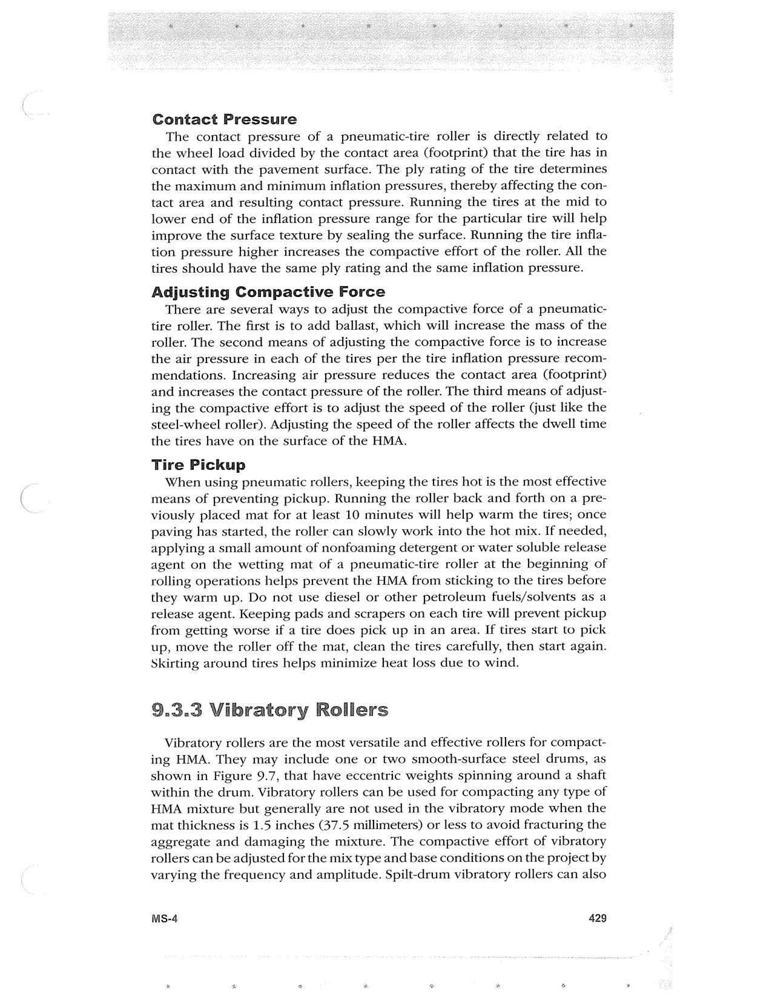

PDF page 463 · book page sequence 429


Searchable transcription
Unproofread OCR · 496 detected words; mean OCR confidence 96.07. Check technical values, symbols and table columns against the scan.
Contact Pressure
The contact pressure of a pneumatic-tire roller is directly related to the wheel load divided by the contact area (footprint) that the tire has in contact with the pavement surface. The ply rating of the tire determines the maximum and minimum inflation pressures, thereby affecting the con- tact area and resulting contact pressure. Running the tires at the mid to lower end of the inflation pressure range for the particular tire will help improve the surface texture by sealing the surface. Running the tire infla- tion pressure higher increases the compactive effort of the roller. All the tires should have the same ply rating and the same inflation pressure.
Adjusting Compactive Force
There are several ways to adjust the compactive force of a pneumatic- tire roller. The first is to add ballast, which will increase the mass of the roller. The second means of adjusting the compactive force is to increase the air pressure in each of the tires per the tire inflation pressure recom- mendations. Increasing air pressure reduces the contact area (footprint) and increases the contact pressure of the roller. The third means of adjust- ing the compactive effort is to adjust the speed of the roller Gust like the steel-wheel roller). Adjusting the speed of the roller affects the dwell time the tires have on the surface of the HMA.
Tire Pickup
When using pneumatic rollers, keeping the tires hot is the most effective means of preventing pickup. Running the roller back and forth on a pre- viously placed mat for at least 10 minutes will help warm the tires; once paving has started, the roller can slowly work into the hot mix. If needed, applying a small amount of nonfoaming detergent or water soluble release agent on the wetting mat of a pneumatic-tire roller at the beginning of rolling operations helps prevent the HMA from sticking to the tires before they warm up. Do not use diesel or other petroleum fuels/solvents as a release agent. Keeping pads and scrapers on each tire will prevent pickup from getting worse if a tire does pick up in an area. If tires start to pick up, move the roller off the mat, clean the tires carefully, then start again. Skirting around tires helps minimize heat loss due to wind.
9.3.3 Vibratory Rollers
Vibratory rollers are the most versatile and effective rollers for compact- ing HMA. They may include one or two smooth-surface steel drums, as shown in Figure 9.7, that have eccentric weights spinning around a shaft within the drum. Vibratory rollers can be used for compacting any type of HMA mixture but generally are not used in the vibratory mode when the mat thickness is 1.5 inches (37.5 millimeters) or less to avoid fracturing the aggregate and damaging the mixture. The compactive effort of vibratory rollers can be adjusted for the mix type and base conditions on the project by varying the frequency and amplitude. Spilt-drum vibratory rollers can also
MS-4 429